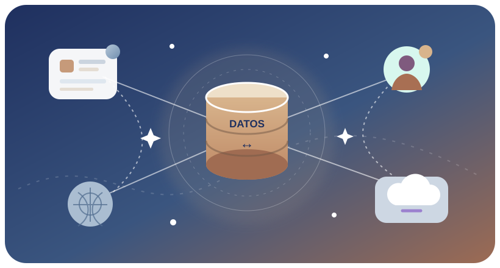
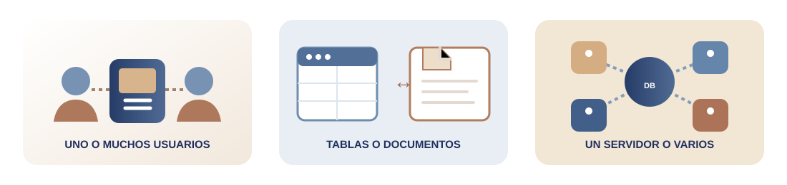
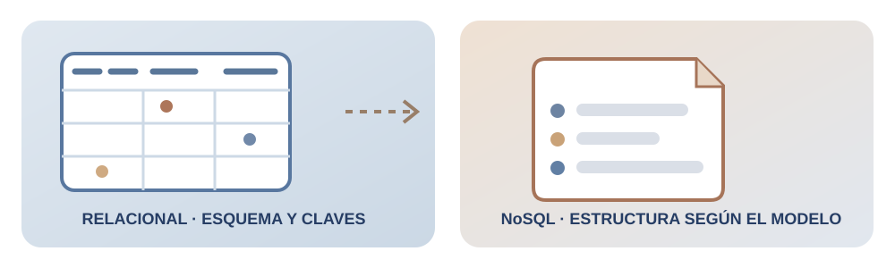
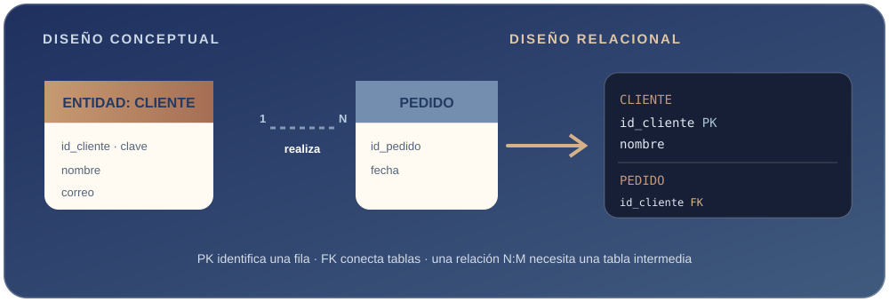

Consulta
Encuentra la información que necesitas con rapidez.
PROYECTO FINAL · GESTIÓN DE BASES DE DATOS
Una guía clara para entender cómo se organizan, se relacionan y se protegen los datos que mueven el mundo digital.
Cada compra, reserva o mensaje deja información. Para que esa información no sea un caos, hacen falta reglas y una herramienta que las haga cumplir.
Un sistema gestor de bases de datos (SGBD) es el software que permite definir, crear, consultar, actualizar y administrar una base de datos. También ayuda a controlar el acceso, la integridad y la recuperación de la información.
EN POCAS PALABRAS: EL ADMINISTRADOR DEL UNIVERSO DE DATOS.Encuentra la información que necesitas con rapidez.
Define permisos y mantiene la integridad de los datos.
Gestiona copias y ayuda a restaurar ante fallos.
Coordina el acceso de varias personas y aplicaciones.

Explicar los sistemas gestores de bases de datos con ejemplos sencillos, comparar cómo organizan la información y mostrar por qué MariaDB puede ser útil en proyectos reales. Dirigido a estudiantes y personas que empiezan a trabajar con datos.
El conjunto organizado de información: por ejemplo, tablas con los libros y préstamos de una biblioteca.
El software que crea, consulta, protege y mantiene esa información. MariaDB es un ejemplo.
Un sistema que encuentra rápido qué libro está disponible y quién lo tiene prestado.
Clasificar los SGBD ayuda a elegir la estructura adecuada para cada proyecto.
Este criterio indica cuántos usuarios pueden conectarse y trabajar con la base de datos.
Un usuario trabaja a la vez. Puede bastar para una herramienta personal o un sistema local pequeño.
Varias personas o aplicaciones consultan y actualizan información. El SGBD coordina las conexiones, permisos y transacciones.
Una aplicación, como una tienda en línea, se conecta al servidor MariaDB. Allí se crean cuentas y permisos; las transacciones ayudan a mantener coherentes operaciones simultáneas.
Ejemplo: varios cajeros registran ventas y descuentan productos del mismo inventario.La cantidad de usuarios que puede atender depende de la configuración, el hardware y la carga de trabajo.
El modelo define la estructura de la información y la forma de relacionarla. Cada enfoque resuelve necesidades distintas.
MariaDB organiza principalmente la información en tablas relacionadas. Las claves identifican registros y conectan tablas; SQL permite consultar y actualizar los datos.
Ejemplo: clientes ↔ pedidos ↔ productos.Jerárquico: estructura de árbol con niveles padre e hijo. Útil cuando los datos siguen una jerarquía fija.
En red: registros conectados con varios registros. Representa relaciones más complejas que un árbol.
Documental: guarda documentos con campos flexibles, a menudo en formato JSON. Útil si cada registro puede tener atributos distintos.
Clave-valor: asocia una clave única con un valor. Adecuado para recuperar rápidamente un dato conocido por su clave.
Grafos: representa entidades como nodos y sus vínculos como relaciones. Conveniente cuando las conexiones son el centro de las consultas.
Familias de columnas: agrupa datos por columnas y puede manejar registros dispersos en grandes conjuntos de información.
Idea clave: NoSQL no es un único modelo; reúne alternativas como documentos, clave-valor, grafos y familias de columnas. MariaDB sigue siendo relacional aunque también pueda trabajar con datos JSON.
La distribución describe cómo se reparten o copian los datos entre servidores conectados.
Un servidor principal guarda y gestiona los datos. Es una arquitectura común para comenzar y más sencilla de administrar.
Varios servidores colaboran. La replicación copia cambios; los clústeres coordinan nodos para disponibilidad o capacidad.
Una instalación sencilla puede usar un solo servidor. Para distribuir datos, MariaDB ofrece replicación primaria-réplica; y MariaDB Galera Cluster permite configurar nodos coordinados para alta disponibilidad y lecturas/escrituras.
Ejemplo: el servidor principal recibe cambios y las réplicas pueden atender lecturas o apoyar recuperación.La distribución requiere configuración y supervisión: las réplicas pueden tardar en reflejar cambios y no sustituyen una estrategia de copias de seguridad.

Elige el reto que más se parece al tuyo y descubre qué tipo de base de datos puede encajar.
No existe una respuesta universal: importa cómo son tus datos y qué consultas harás.

| ASPECTO | RELACIONAL | NO RELACIONAL (NoSQL) |
|---|---|---|
| Estructura | Tablas con filas y columnas; cada columna tiene un tipo de dato | Documentos, grafos, clave-valor o familias de columnas |
| Relaciones | Claves primarias y foráneas conectan tablas | Se representan según el modelo; algunos datos pueden anidarse |
| Esquema | Se define para que los registros mantengan una forma coherente | Puede ser flexible, aunque las reglas siguen siendo importantes |
| Transacciones | Muy usado cuando varias operaciones deben confirmarse juntas | El soporte depende del producto y del modelo |
| Escalabilidad | Puede escalar verticalmente y también distribuirse según la tecnología | Muchos sistemas se diseñan para escalar horizontalmente |
| Ideal para | Datos conectados, reglas claras y operaciones consistentes | Datos variables, acceso distribuido o consultas especializadas |
| Ejemplos | MariaDB, PostgreSQL | MongoDB, Redis, Cassandra, Neo4j |
¿La clave? “No relacional” no quiere decir que no haya relaciones: indica que no se basa necesariamente en tablas relacionadas mediante el modelo relacional. La mejor elección depende de las consultas, consistencia, escala y experiencia que necesita el proyecto.
El modelo entidad-relación describe el mundo que queremos representar. El modelo relacional convierte ese diseño en tablas y claves implementables.
01Entidad → tabla
02Atributo → columna
03Relación → clave o tabla intermedia

Una persona y un pasaporte: cada quien tiene solo uno.
Un cliente puede realizar varios pedidos; cada pedido pertenece al mismo cliente.
Varios estudiantes cursan varias asignaturas; se crea una tabla intermedia.
Vista conceptual: entidades, atributos y relaciones. Ayuda a conversar y validar requisitos antes de construir.
Vista lógica en tablas, columnas, claves y restricciones. Sirve de plano para implementar la base de datos.
Un sistema gestor de bases de datos relacional que organiza la información en tablas conectadas. Usa SQL, controles de acceso, transacciones y motores de almacenamiento que responden a distintos tipos de trabajo.
Entrar al laboratorio ↓Michael “Monty” Widenius y Monty Program iniciaron el proyecto con apoyo de desarrolladores originales y de la comunidad. Nació tras la adquisición de MySQL por Oracle; el vínculo explica su historia y compatibilidad, pero hoy MariaDB tiene desarrollo propio. Su nombre honra a Maria, hija de Monty.
No es una sigla. Es un nombre propio. La categoría sí tiene siglas: SGBDR significa Sistema Gestor de Bases de Datos Relacional.
SQL, tablas relacionadas, transacciones, índices, vistas, procedimientos, control de permisos, replicación y varios motores de almacenamiento.
MariaDB organiza los datos en una jerarquía sencilla. Las claves conectan registros que pertenecen a distintas tablas.
CREATE TABLE libro (
id_libro INT PRIMARY KEY,
titulo VARCHAR(120) NOT NULL
) ENGINE=InnoDB;CREATE TABLE prestamo (
id INT PRIMARY KEY,
id_libro INT NOT NULL,
fecha DATE NOT NULL,
devuelto BOOLEAN DEFAULT FALSE,
FOREIGN KEY (id_libro)
REFERENCES libro(id_libro)
) ENGINE=InnoDB;Piensa en un restaurante: tú pides, el servidor coordina y el motor encuentra dónde están los ingredientes.
Envía una instrucción SQL con un conector o una herramienta.
Verifica permisos, entiende la consulta y prepara un plan.
El motor de almacenamiento lee o escribe los datos.
Los datos regresan a la aplicación de forma ordenada.
MariaDB separa el servidor de la forma en que se almacenan los datos. Según la versión e instalación, cada tabla puede usar motores con fortalezas distintas.
Ver motores en la documentación ↗Al registrar un pago, por ejemplo, no queremos descontar el dinero sin crear el pedido. Las propiedades ACID ayudan a mantener los cambios confiables.
Esta consulta ilustrativa une libros con sus préstamos. Presiona ejecutar para ver un resultado de ejemplo.
SELECT libro.titulo, prestamo.fecha
FROM libro
JOIN prestamo ON prestamo.id_libro = libro.id_libro
WHERE prestamo.devuelto = 0;Productos, inventario, clientes y pedidos conectados.
Estudiantes, cursos, calificaciones e inscripciones.
Citas, usuarios y registros con acceso controlado.
Consultas y reportes para descubrir patrones.